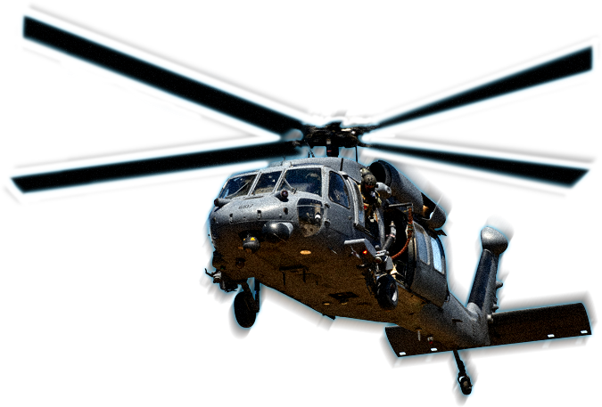
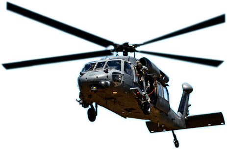

Air National Guard
Task Force Irene
Rushing to the Rescue
Hurricane Irene sweeps the Eastern Coast wreaking havoc and causing untold destruction.
Long before the call comes, Air National Guardsmen are ready to help.
VERMONT
Nearly 2,400 roads are wrecked. Around 800
homes and businesses, 300 bridges, and several
railroad tracks are also severely damaged.
NEW YORK
Three towns are rendered uninhabitable. Now a
tropical storm, Irene causes catastrophic flooding
that cuts off hamlets and takes seven lives.
NEW JERSEY
Irene drops 11 inches of rain, knocks out power for
1.46 million people, and causes seven fatalities
and $1 billion in damage.
VIRGINIA
Over 1.2 million lose power. Trees crush
homes and cars, block roads, take out
power lines, and ultimately, kill four people.
NORTH
CAROLINA
Making landfall, with winds of 85 mph, Irene
spawns several tornadoes. More than 1,100
homes are leveled.
-
Vermont
Nearly 2,400 roads damaged
-
New York
Three towns rendered
uninhabitable
-
New Jersey
Seven fatalities
-
Virginia
Over 1.2 million lose power
-
North Carolina
More than 1,100 homes
leveled
From downed trees to bridge
washouts, Hurricane Irene ranks as
one of the costliest storms ever.

LEARN ABOUT CAREERS ASSOCIATED WITH THIS AIRCRAFT

- HH-60 PILOT
- AERIAL GUNNER
- PARARESCUE JUMPER
- AVIONICS ENGINEER
BACK TO AIRCRAFT OVERVIEW
HH-60 PAVE
HAWK PILOT
Across hazardous terrain, in adverse weather conditions, you'll race
against time to rescue people in danger, deliver desperately needed
supplies or complete an in-flight refueling mission. And you'll do it
with precise skill, strong spatial perception and grace under pressure.
FIND OUT MORE ABOUT THIS CAREER
AERIAL
GUNNER
Whether you're flying a search-and-rescue operation or a combat
mission, your ultimate responsibility is to protect your crew. You'll
need to be skilled in the use of night vision goggles, know how to
read schematics, understand combat techniques and more.
FIND OUT MORE ABOUT THIS CAREER
PARARESCUE
JUMPER
Parachute into a remote jungle. Rope down to frozen tundra.
Scuba dive in the deep ocean. Trained in emergency medical
tactics and survival skills, you're ready to go to extreme lengths
to search, rescue and save lives at a moment's notice.
FIND OUT MORE ABOUT THIS CAREER
AVIONICS
ENGINEER
The operational readiness of Air Guard aircraft is crucial to mission
success. Beyond routine maintenance, you'll need to analyze
performance and repair malfunctions in everything from radar and
communications to flight control and engine control systems.
FIND OUT MORE ABOUT THIS CAREER
Fly through adverse
weather conditions
to rescue victims in
unreachable places.
Train to become one of the elite
From hikers stranded on a mountaintop to fishermen adrift in an ocean, you're ready to go
anywhere, to rescue anyone.
SEE WHAT IT TAKES
HELP IN EVERY WAY POSSIBLE
Restore communications, hold back rising waters and navigate
impassable roads to evacuate civilians and bring in supplies.
DEDICATION WITHOUT LIMITS
“Hurricane Irene devastated
communities all over the state.
Our first responders were selfless...
and they were courageous.”
- Andrew Cuomo, New York Governor
IN THE AFTERMATH OF IRENE
1,573 Airmen from 23 states helped relieve suffering, prevent further devastation and save lives.